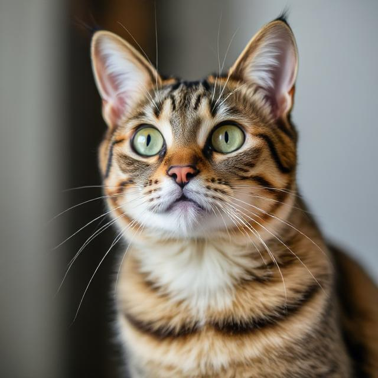

A true pioneer in feline intelligence, Agent Whisks dedicated his nine lives to the research and mission of the SCAA. Providing ample data and information throughout his career, he was known for his sharp instincts, stealthy movement, and the ability to appear exactly when food time arrived.
This agent was one of the best at the time. He was the perfect example of selective hearing— or more so, selective ignorance—towards humans when he wanted.
Agent Whisks will never be forgotten for the work he contributed to this amazing agency. Rest in peace, Agent Whisks. He heard everything, but responded to nothing.

The SCAA or Secret Cat Association Agency is the organization that conducts secret research that uncovers the truth about cat language comprehension, unnoticed cat behaviors and the hidden intelligence of felines. For years the world has underestimated cats. This Cat Agency works tirelessly to decode feline behavior, expose their secret intelligence and bridge the gap between humans and their companions.